Hide/Show
variable='Sp10m3'; species='Sardine'; ccolor='blue';maxvalue=200
listyears=c(2000:2019,2021:2024)
file.data='DataEggs/Cufes_spring_ifremer.txt'
data.eggs=read.table(file=file.data,sep="\t",header=T)variable='Sp10m3'; species='Sardine'; ccolor='blue';maxvalue=200
listyears=c(2000:2019,2021:2024)
file.data='DataEggs/Cufes_spring_ifremer.txt'
data.eggs=read.table(file=file.data,sep="\t",header=T)data.eggs_sf <- st_as_sf(data.eggs, coords = c("Long", "Lat"), crs = "WGS84")
plot_eggs <- ggplot(data = data.eggs_sf) +
geom_sf(aes(color = Sp10m3), alpha = 0.8, size = 0.8) +
facet_wrap(~ Year) +
scale_color_viridis_c(trans = "log", na.value = "grey80", name = expression("Log(Eggs/10m³)\n grays are zero")) +
ggtitle("Total Sardine eggs")
plot_eggs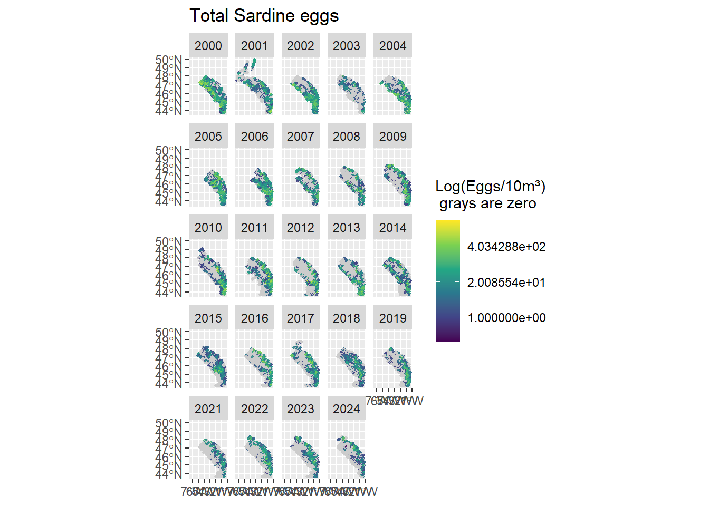
Those are the row data of eggs from PELGAS survey for years 2000-2024 (1 year -2020- gap). Eggs are collected using CUFES at 5m depth, every 3nmi (5.556Km) at transects with inter-transect distance of 12nmi (22.22Km).
Sp10m3 & Ee10m3: total eggs density (no eggs/ 10m 3 ) for sardine and anchovy respectively.
Sp1,2,3 & Ee1,2,3: the number of eggs or sardine and anchovy respectively for specific stages.
Group1: no embryo, egg stages (1-3)
Group2: early embryo, egg stages (4-6)
Group3: late embryo, egg stages (7-11).
Sonde(depth), Ventvrai, Dirventvrm, Tempsbe Salinite, chlorophyl,
We have to think:
The vertical distribution of eggs
Eggs cohorts (Total eggs, group1, aging and Po) [@petitgas2009] at least remove the effect of temperature by standardizing with stage duration time (Renger et al 1985)
data.eggs<- data.eggs %>% filter(Lat < 48 & is.na(Sp10m3)==F) %>%
mutate(Year=as.factor(Year), time=as.integer(Year))
data.eggs <- add_utm_columns(data.eggs, c("Long", "Lat"), ll_crs = 4326, units = "km") #Project coordinates to KmProceeding with UTM zone 30N; CRS = 32630.Visit https://epsg.io/32630 to verify.data.eggs_sf <- st_as_sf(data.eggs, coords = c("Long", "Lat"), crs = "WGS84")
plot_eggs <- ggplot(data = data.eggs_sf) +
geom_sf(aes(color = Sp10m3), alpha = 0.8, size = 0.8) +
facet_wrap(~ Year) +
scale_color_viridis_c(trans = "log", na.value = "grey80", name = expression("Log(Eggs/10m³)\n grays are zero")) +
ggtitle("Total Sardine eggs")
plot_eggs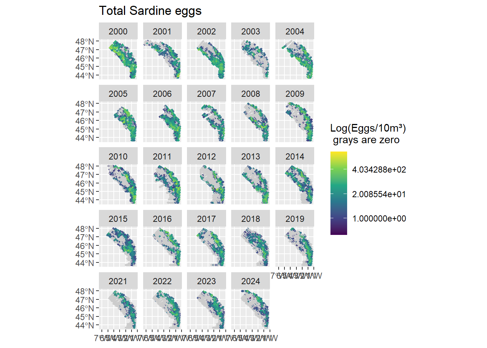
We are going to need another grid in which we will predict the eggs abundance using the final model.
The prediction grid has to be replicated for the years included in the study; it also needs to have all the covariates that were used in the model. To have these variables in the spatial resolution of the prediction grid instead of an classic interpolation here we use same approach as[@lindmark2023] .
Based on than approach you built a simple spatio-temporal model for each covariate (ex. m_temperature: μs,t= βt+ ωs +εs,t) of your final model and you use that model (m_temperature) to predict the variable (here temperature) in the resolution of the prediction grid. You repeat that process for all your covariates.
So, finaly you will you have the final prediction grid, which has information of all the fixed covariates included in your final model in the spatial resolution of the prediction grid.
#Insert the grid
projection_grid <- readRDS("./DataEggs/user_region.rds")
projection_grid_UTM <- add_utm_columns(projection_grid, c("Lon", "Lat"), ll_crs = 4326, units = "km")Detected UTM zone 30N; CRS = 32630.Visit https://epsg.io/32630 to verify.plot(projection_grid_UTM$X,projection_grid_UTM$Y)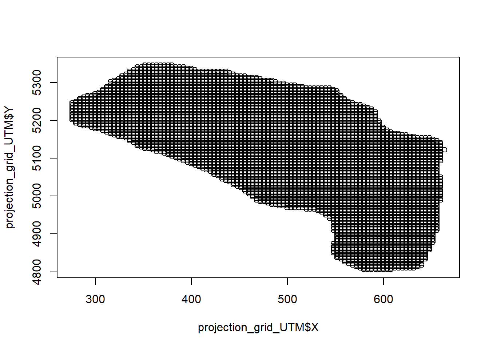
#Replicate the grid across year
grid_yrs <- replicate_df(projection_grid_UTM, c("Year"), as.factor(unique(data.eggs$Year))) %>%
mutate(time=as.integer(Year))In these kinds of models, the spatial (ωs) and the spatiotemporal (εs,t) variations (and potentially any spatial varying coefficient) are modeled as Gaussian Random Fields (GRF), where the random effects describing the spatial patterns are assumed to be drawn from a multivariate normal distribution MVNormal (0,Σ). Estimating this covariance matrix (Σ) is computational demanding, so the SPDE approach is used to approximate the Gaussian random fields.
For the SPDE approximation approach you need another grid called the mesh which is a triangulated mesh with Knots. These Knots are used to approximate the spatial variability in your data and because the number of Knots << number of data points the computation of the covariance is easier. The Matern correlation is used as a covariance function to account for spatial autocorrelation.
Maybe more discussion in how you contract the mesh (ex. who many Knots you need)
So, so far we have three grids with different spatial resolution :
The data grid (your sampling points, those data are used to estimate fixed parameres)
The mesh (for the Gaussian Random Fields approximation)
The prediction grid ( for predictions using your final model).
So the mesh is:
mesh <- make_mesh(data.eggs, xy_cols = c("X", "Y"), cutoff = 30) # cutoff: minimum distance between knots before a new mesh vertex is added- units as in your dataset
plot(mesh) 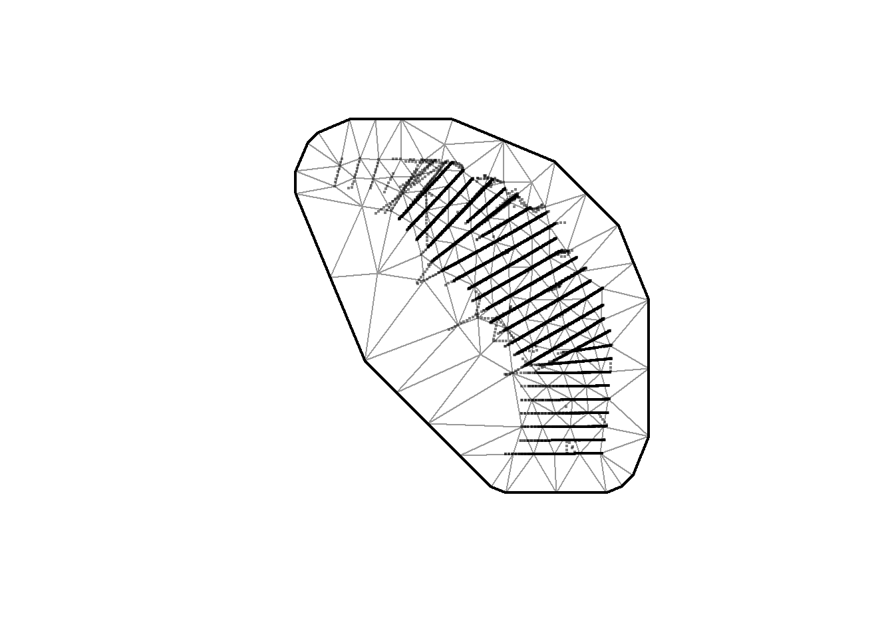
The first model (m1) follows that formula:
μs,t= exp(βt+ ωs),
μs,t= log(ys,t ),
ys,t ~ Tweedie (μs,t ,p, φ) , ω~ MVNormal (0,Σω)
where the modeled egg density (μs,t) follows the Tweedie distribution with a log link function, as egg density is positive, continuous and contains zeros.
ys,t represents eggs density (no of eggs/10m2) at space (s) and time(t), μ is the mean density at time and space and p, φ represent power and dispersion parameters of the Tweedie distribution, respectively.
βt are the fixed effects for factor(Year), they represent the average temporal variation
ωs is the spatial random effect, drawn from a GRF with covarianvce matrix Σω using Maretn correlation function. It represents the average spatial pattern (nich effect) and it also accounts for spatial variation that is not accounted for by our fixed effects. In other words, these deviations represent consistent biotic and abiotic factors that are affecting biomass density but are not accounted for in the model.
fit_m1 <- sdmTMB(
Sp10m3 ~ 0 + Year,
data = data.eggs,
mesh = mesh,
family = tweedie(link = "log"),
spatial = "on"
)fit_m1 Spatial model fit by ML ['sdmTMB']
Formula: Sp10m3 ~ 0 + Year
Mesh: mesh (isotropic covariance)
Data: data.eggs
Family: tweedie(link = 'log')
coef.est coef.se
Year2000 2.73 1.52
Year2001 1.07 1.52
Year2002 1.41 1.52
Year2003 -0.07 1.52
Year2004 1.49 1.52
Year2005 1.86 1.52
Year2006 1.45 1.52
Year2007 0.62 1.52
Year2008 1.15 1.52
Year2009 1.23 1.52
Year2010 1.16 1.52
Year2011 1.46 1.52
Year2012 1.15 1.52
Year2013 1.20 1.52
Year2014 1.27 1.52
Year2015 0.43 1.52
Year2016 0.66 1.52
Year2017 0.56 1.52
Year2018 0.48 1.52
Year2019 0.44 1.52
Year2021 0.37 1.52
Year2022 0.68 1.52
Year2023 0.17 1.52
Year2024 -0.31 1.52
Dispersion parameter: 9.49
Tweedie p: 1.66
Matérn range: 174.89
Spatial SD: 3.36
ML criterion at convergence: 48187.087
See ?tidy.sdmTMB to extract these values as a data frame.fix_effects<- tidy(fit_m1, conf.int = TRUE)
fix_effects# A tibble: 24 × 5
term estimate std.error conf.low conf.high
<chr> <dbl> <dbl> <dbl> <dbl>
1 Year2000 2.73 1.52 -0.247 5.70
2 Year2001 1.07 1.52 -1.91 4.04
3 Year2002 1.41 1.52 -1.56 4.39
4 Year2003 -0.0683 1.52 -3.05 2.91
5 Year2004 1.49 1.52 -1.49 4.46
6 Year2005 1.86 1.52 -1.11 4.84
7 Year2006 1.45 1.52 -1.53 4.42
8 Year2007 0.618 1.52 -2.36 3.60
9 Year2008 1.15 1.52 -1.83 4.12
10 Year2009 1.23 1.52 -1.74 4.21
# ℹ 14 more rowsrandom_effects<- tidy(fit_m1, effects = "ran_pars", conf.int = TRUE)
random_effects# A tibble: 4 × 5
term estimate std.error conf.low conf.high
<chr> <dbl> <dbl> <dbl> <dbl>
1 range 175. 43.4 108. 285.
2 phi 9.49 0.0991 9.29 9.68
3 sigma_O 3.36 0.618 2.34 4.81
4 tweedie_p 1.66 0.00321 1.66 1.67Other than the effect of the spatial random field you have: :
Matérn range: the distance at witch you have no correlation - similar to the variogram range
phi (φ) & tweedie_p (p): the dispersion parameter and the power of the Tweedie distribution, respectively.
ggplot() +
geom_point(data = fix_effects, aes(x = estimate, y = term, col = term)) +
geom_errorbar(data = fix_effects, aes(y = term, xmin = conf.low, xmax = conf.high, color = term), width = 0.2) +
geom_point(data = random_effects %>% filter(term == "sigma_O"), aes(x = estimate, y = term)) +
geom_errorbar(data = random_effects %>% filter(term == "sigma_O"), aes(y = term, xmin = conf.low, xmax = conf.high), width = 0.2) +
labs( title = expression("Mean and 95% confidence intervals of the fixed & random effects," ~ m[1]),
subtitle = expression(mu[s~t] ~ "=" ~ exp(beta[t] + omega[s]))) +
theme_bw() +
theme(legend.position = "none")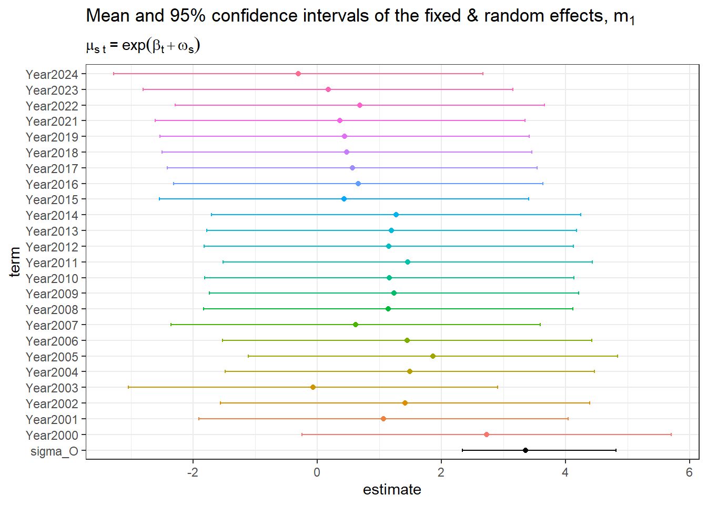
You can see that the effect of spatial term is the most “important” one. Space is the more influential parameter in egg distribution in this model.
What do you check?
Residuals?
sanity(fit_m1)✔ Non-linear minimizer suggests successful convergence✔ Hessian matrix is positive definite✔ No extreme or very small eigenvalues detected✔ No gradients with respect to fixed effects are >= 0.001✔ No fixed-effect standard errors are NA✔ No standard errors look unreasonably large✔ No sigma parameters are < 0.01✔ No sigma parameters are > 100✔ Range parameter doesn't look unreasonably largeYou now perform a prediction in you prediction grid using the fitted model m1. When you visualize your prediction in a map you can visualize your final prediction your model (eg. the estimated number of eggs) or you can visualize separately each part of the decomposition (the effect of the fixed covariates and the effect of the random fields (ωs, εs,t) and see what is going on.
#Predict in the prediction grid that has been created above
p_m1 <- predict(fit_m1, newdata = grid_yrs)plot_m1 <- ggplot(data=p_m1, aes(X, Y, fill = exp(est))) +
geom_raster() + facet_wrap(vars(Year)) +
scale_fill_viridis_c(trans = "log")+
ggtitle("Prediction (fixed effects + random effects) based on full m1",
subtitle = expression("The estimated density of eggs " * log(mu[st]) * ": " * mu[st] == exp(beta[t] + omega[s])))
plot_m1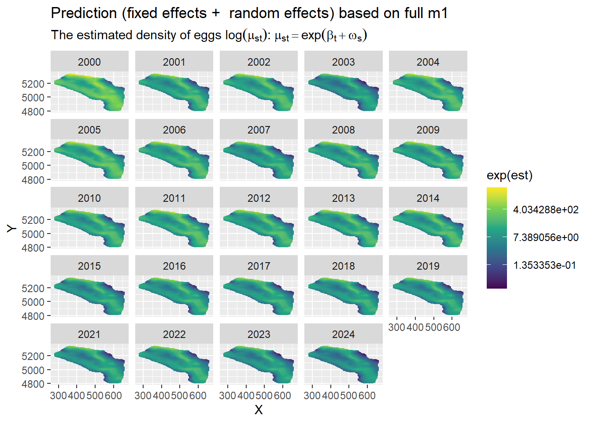
plot_m1 <- ggplot(data=p_m1, aes(X, Y, fill = exp(est_non_rf))) +
geom_raster() + facet_wrap(vars(Year)) +
scale_fill_viridis_c(trans = "log")+
ggtitle("Prediction (fixed effects only) based on full m1",
subtitle = expression("The effect of time in the estimated variable " * (beta[t]) * ": " * mu[st] == exp(beta[t] + omega[s])))
plot_m1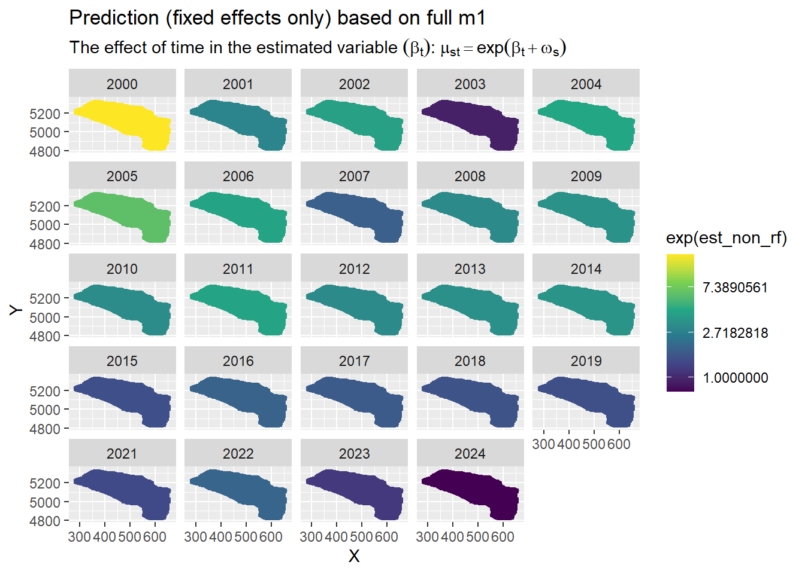
Here spatial random effect only
plot_m1 <- ggplot(data=p_m1, aes(X, Y, fill = exp(omega_s))) +
geom_raster() +
scale_fill_viridis_c(trans = "log")+
ggtitle("Prediction (random effects only) based on full m1",
subtitle = expression("The effect of space in the estimated variable " * (omega[s]) * ": " * mu[st] == exp(beta[t] + omega[s])))
plot_m1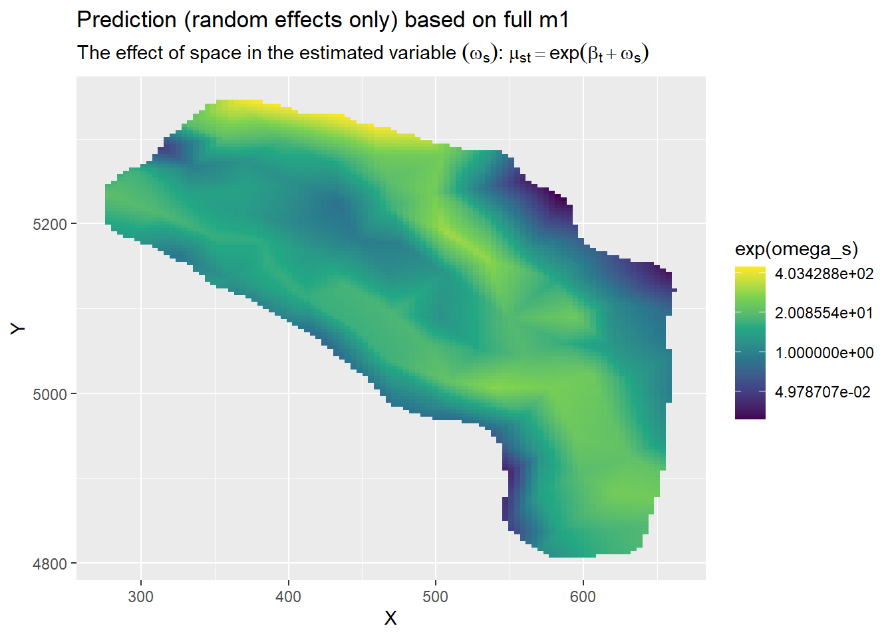
For the ωs we have only one map because the spatial effect is stable across time. This is the mean spatial effect estimated from your data and it also represents the mean spatial distribution. If you want to see if or how the spatial effect changes in time then you need a spatiotemporal random effect (see m2).
This spatial random effect represents variance in space (but consistence through time) coming from the data that are not accounted by the fixed effects. In this model compared to m1 the spatial random effect is less influential because a part of the variability is now explained by the spatiotemporal effect term.
The 2nd model (m2) follows that formula:
μs,t= exp(βt+ ωs + εs,t),
μs,t= log(ys,t ),
ys,t ~ Tweedie (μs,t ,p, φ) , ω~ MVNormal (0,Σω) , εt ~ MVNormal (0,Σt)
where the modeled egg density (μs,t) follows the Tweedie distribution with a log link function, as egg density is positive, continuous and contains zeros.
ys,t represents eggs density (no of eggs/10m2) at space (s) and time(t), μ is the mean density at time and space and p, φ represent power and dispersion parameters of the Tweedie distribution, respectively.
βt are the fixed effects for factor(Year), they represent the average temporal variation
ωs is the spatial random effect, drawn from a GRF with covarianvce matrix Σω using Maretn correlation function. It represents the average spatial pattern (nich effect) and it also accounts for spatial variation that is not accounted for by our fixed effects. In other words, these deviations represent consistent biotic and abiotic factors that are affecting biomass density but are not accounted for in the model.
εs,t represents the spatiotemporal random effect, drawn from a GRF with covarianvce matrix Σε. They represents how the average spatial pattern change through year so they also for spatial variation that is not accounted for by our fixed effects and the spatial random effects. In other words, these deviations represent consistent biotic and abiotic factors that are affecting our study variable but are not accounted for in the model.
In this model Spatiotemporal random fields are considered independent and identically distributed each single year (spatiotemporal = “IID”) and Maretn correlation function to accounts for spatial autocorrelation.
Are there other options for spatiotemporal fields:
“AR1”: first-order autoregressive (each random filed is correlated to the one of the previous year )
“RW”: random walk (each random filed starts fro where it was last year plus a completely independent deviation)
fit_m2 <- sdmTMB(
Sp10m3 ~ 0 + Year,
data = data.eggs,
mesh = mesh,
family = tweedie(link = "log"),
spatial = "on",
spatiotemporal = "IID",
time = "time")fit_m2Spatiotemporal model fit by ML ['sdmTMB']
Formula: Sp10m3 ~ 0 + Year
Mesh: mesh (isotropic covariance)
Time column: time
Data: data.eggs
Family: tweedie(link = 'log')
coef.est coef.se
Year2000 1.95 0.98
Year2001 -0.36 0.96
Year2002 0.36 0.99
Year2003 -1.73 0.99
Year2004 1.07 0.95
Year2005 0.91 1.03
Year2006 0.75 1.03
Year2007 0.12 1.00
Year2008 -0.93 0.99
Year2009 -0.68 0.97
Year2010 -0.56 0.97
Year2011 0.09 0.94
Year2012 -0.12 0.95
Year2013 -0.37 0.97
Year2014 -0.59 0.97
Year2015 -1.40 0.97
Year2016 -0.88 0.98
Year2017 -0.44 0.96
Year2018 -0.98 0.97
Year2019 -1.84 0.98
Year2021 -2.74 1.01
Year2022 -1.66 0.99
Year2023 -1.90 0.99
Year2024 -1.68 0.98
Dispersion parameter: 5.61
Tweedie p: 1.57
Matérn range: 80.58
Spatial SD: 2.96
Spatiotemporal IID SD: 2.62
ML criterion at convergence: 43945.674
See ?tidy.sdmTMB to extract these values as a data frame.fix_effects<- tidy(fit_m2, conf.int = TRUE)
fix_effects# A tibble: 24 × 5
term estimate std.error conf.low conf.high
<chr> <dbl> <dbl> <dbl> <dbl>
1 Year2000 1.95 0.979 0.0326 3.87
2 Year2001 -0.360 0.959 -2.24 1.52
3 Year2002 0.361 0.986 -1.57 2.29
4 Year2003 -1.73 0.986 -3.66 0.202
5 Year2004 1.07 0.947 -0.785 2.93
6 Year2005 0.906 1.03 -1.11 2.92
7 Year2006 0.750 1.03 -1.26 2.76
8 Year2007 0.119 1.00 -1.84 2.08
9 Year2008 -0.933 0.989 -2.87 1.01
10 Year2009 -0.683 0.969 -2.58 1.22
# ℹ 14 more rowsrandom_effects<- tidy(fit_m2, effects = "ran_pars", conf.int = TRUE)
random_effects# A tibble: 5 × 5
term estimate std.error conf.low conf.high
<chr> <dbl> <dbl> <dbl> <dbl>
1 range 80.6 5.64 70.3 92.4
2 phi 5.61 0.0655 5.48 5.74
3 sigma_O 2.96 0.308 2.42 3.63
4 sigma_E 2.62 0.0758 2.48 2.78
5 tweedie_p 1.57 0.00342 1.56 1.57Other than the effect of the spatial random (sigma_O) and the spatiotemporal random field (sigma_E) field you have: :
Matérn range: the distance at witch you have no correlation - similar to the variogram range
phi (φ) & tweedie_p (p): the dispersion parameter and the power of the Tweedie distribution, respectively.
ggplot() +
geom_point(data = fix_effects, aes(x = estimate, y = term, col = term)) +
geom_errorbar(data = fix_effects, aes(y = term, xmin = conf.low, xmax = conf.high, color = term), width = 0.2) +
geom_point(data = random_effects %>% filter(term == c("sigma_O","sigma_E")), aes(x = estimate, y = term)) +
geom_errorbar(data = random_effects %>% filter(term == c("sigma_O","sigma_E")), aes(y = term, xmin = conf.low, xmax = conf.high), width = 0.2) +
labs( title = expression("Mean and 95% confidence intervals of the fixed & random effects," ~ m[2]),
subtitle = expression(mu[s~t] ~ "=" ~ exp(beta[t] + omega[s] +epsilon[st]))) +
theme_bw() +
theme(legend.position = "none")You can see that the effect of spatial term is steal the most “important” one. But a lot of is effect is now explained by the spatiotemporal effect.
sanity(fit_m2)✔ Non-linear minimizer suggests successful convergence✔ Hessian matrix is positive definite✔ No extreme or very small eigenvalues detected✔ No gradients with respect to fixed effects are >= 0.001✔ No fixed-effect standard errors are NA✔ No standard errors look unreasonably large✔ No sigma parameters are < 0.01✔ No sigma parameters are > 100✔ Range parameter doesn't look unreasonably largeYou can steel predict in the same grid as m1 as no more covariates have been added to the model.
p_m2 <- predict(fit_m2, newdata = grid_yrs)plot_m2 <- ggplot(data=p_m2, aes(X, Y, fill = exp(est))) +
geom_raster() + facet_wrap(vars(Year)) +
scale_fill_viridis_c(trans = "log")+
ggtitle("Prediction (fixed effects + random effects) based on full m2",
subtitle = expression("The estimated density of eggs " * log(mu[st]) * ": " * mu[st] == exp(beta[t] + omega[s]+ epsilon[st])))
plot_m2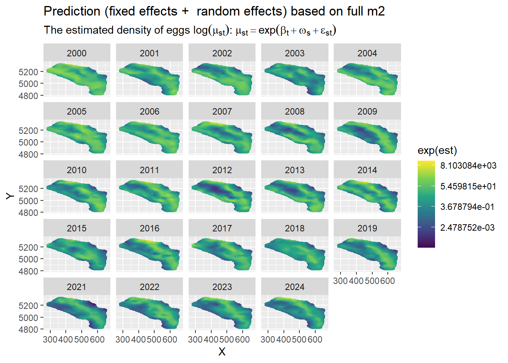
plot_m2 <- ggplot(data=p_m2, aes(X, Y, fill = exp(est_non_rf))) +
geom_raster() + facet_wrap(vars(Year)) +
scale_fill_viridis_c(trans = "log")+
ggtitle("Prediction (fixed effects only) based on full m2",
subtitle = expression("The effect of time in the estimated variable " * (beta[t]) * ": " * mu[st] == exp(beta[t] + omega[s]+ epsilon[st])))
plot_m2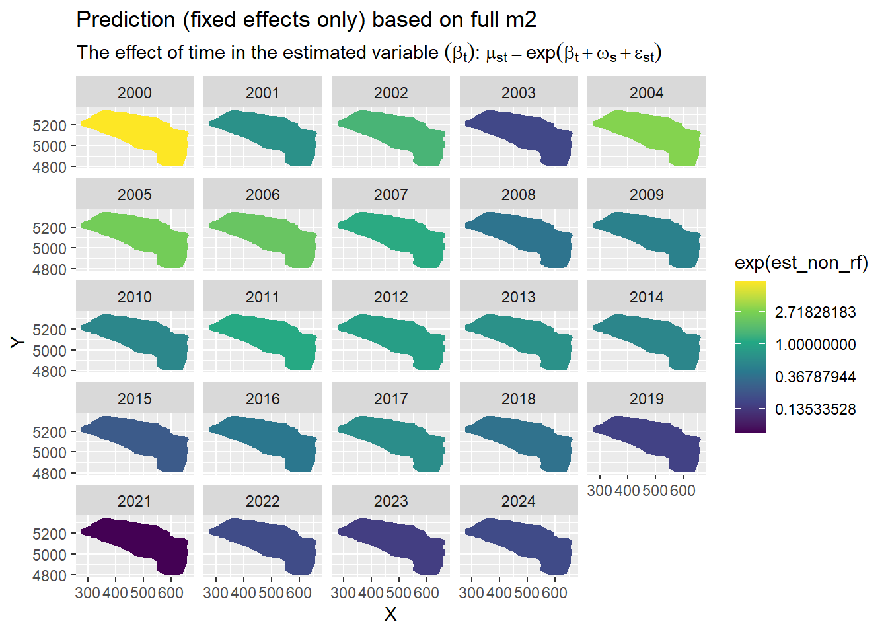
Here spatial & spatiotemporal random effects
plot_m2 <- ggplot(data=p_m2, aes(X, Y, fill = exp(omega_s))) +
geom_raster() +
scale_fill_viridis_c(trans = "log")+
ggtitle("Prediction (spatial random effect) based on full m2",
subtitle = expression("The effect of space in the estimated variable " * (omega[s]) * ": " * mu[st] == exp(beta[t] + omega[s] + epsilon[st])))
plot_m2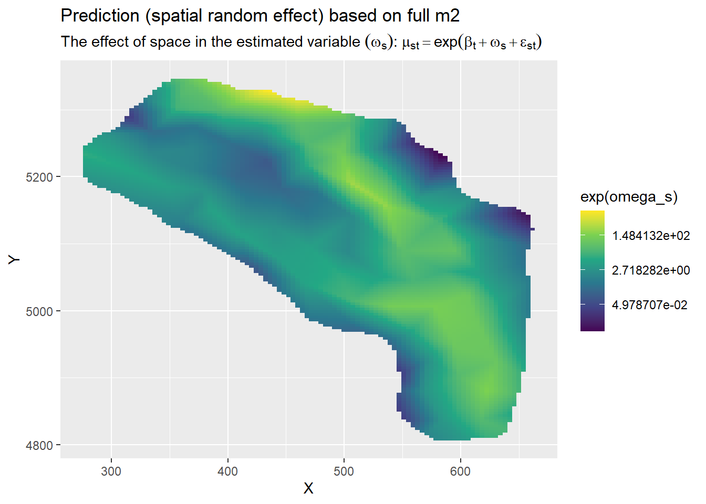
plot_m2 <- ggplot(data=p_m2, aes(X, Y, fill = exp(epsilon_st))) +
geom_raster() +
facet_wrap(vars(Year)) +
scale_fill_viridis_c(trans = "log")+
ggtitle("Prediction (spatiotemporal random effect) based on full m2",
subtitle = expression("The effect of space through time in the estimated variable " * (epsilon[st]) * ": " * mu[st] == exp(beta[t] + omega[s] + epsilon[st])))
plot_m2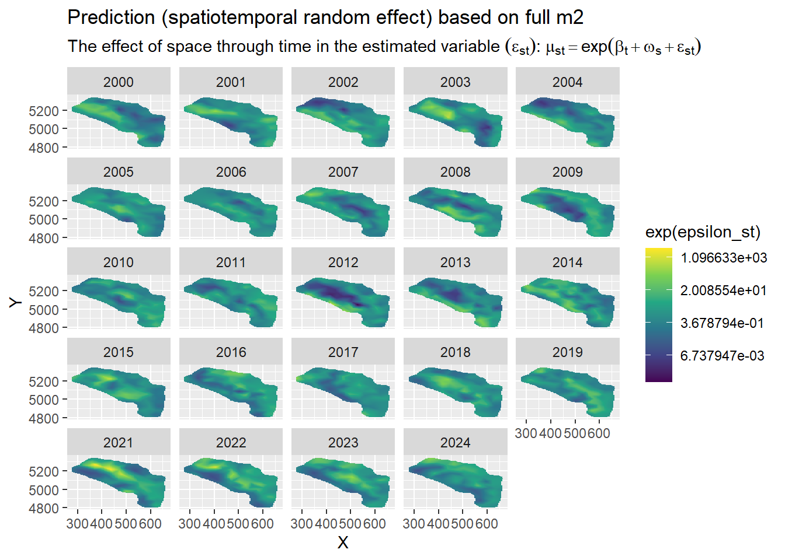
The spatiptempral random effect represent deviation from the fixed effect predictions and the spatial random effect deviations. These represent changes in the spatial paternal through time that are forced by parameters not accounted for in the model.
Now letts add a variable.
The 3nd model (m3) will be a spatiotemporal model with Temperature as a covariate :
μs,t= exp(Xs,tβ+βt+ ωs + εs,t),
μs,t= log(ys,t ),
ys,t ~ Tweedie (μs,t ,p, φ) , ω~ MVNormal (0,Σω) , εt ~ MVNormal (0,Σt)
where the modeled egg density (μs,t) follows the Tweedie distribution with a log link function, as egg density is positive, continuous and contains zeros.
ys,t represent eggs density (no of eggs/10m2) at space (s) and time(t), μ is the mean density at time and space and p, φ represent power and dispersion parameters of the Tweedie distribution, respectively.
Xs,t, is the design matrix with covariates temperature and year as factor. Temperature is modeled with a smooth function.
β is a vector with the fixed effect coefficients (here only temperature)
βt are the fixed effects for factor(Year), they represent the average temporal variation
ωs is the spatial random effect, drawn from a GRF with covarianvce matrix Σω using Maretn correlation function. It represents the average spatial pattern (nich effect) and it also accounts for spatial variation that is not accounted for by our fixed effects. In other words, these deviations represent consistent biotic and abiotic factors that are affecting biomass density but are not accounted for in the model.
εs,t represents the spatiotemporal random effect, drawn from a GRF with covarianvce matrix Σε. They represents how the average spatial pattern change through year so they also for spatial variation that is not accounted for by our fixed effects and the spatial random effects. In other words, these deviations represent consistent biotic and abiotic factors that are affecting our study variable but are not accounted for in the model.
In this model Spatiotemporal random fields are considered independent and identically distributed each single year (spatiotemporal = “IID”) and Maretn correlation function to accounts for spatial autocorrelation.
To fit the new model we need to
Check the data are ok (mainly covariates)
Create new mesh based on the new data sets (some data points are removed)
Create a new prediction grid containing all the covariates (the [@lindmark2023] approach is used, see intro)
summary(data.eggs$Tempsbe) Min. 1st Qu. Median Mean 3rd Qu. Max. NA's
-300.00 13.75 14.53 13.97 15.48 69.71 18 hist(data.eggs$Tempsbe)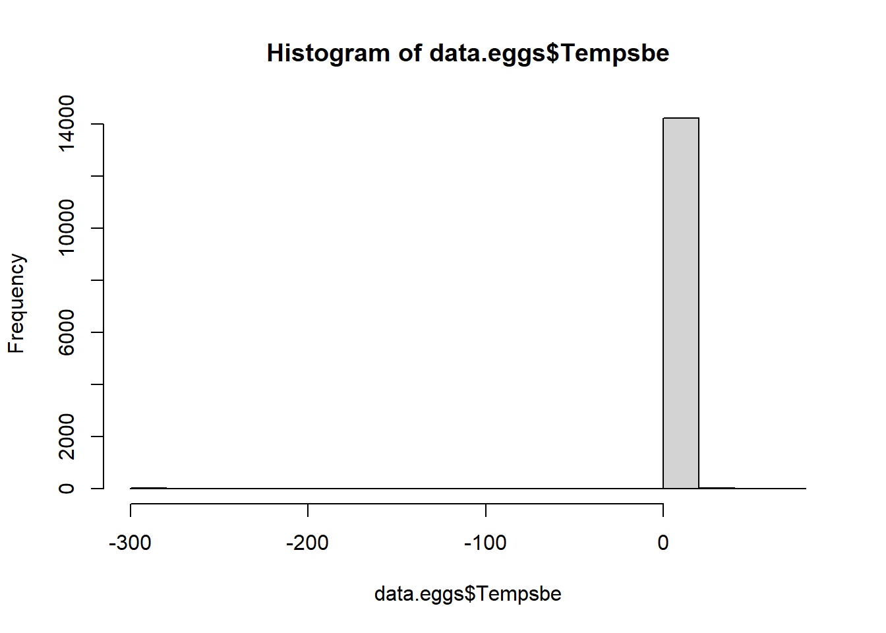
data.temp=data.eggs[data.eggs$Tempsbe>=0 & data.eggs$Tempsbe<30 & !is.na(data.eggs$Tempsbe),]
hist(data.temp$Tempsbe)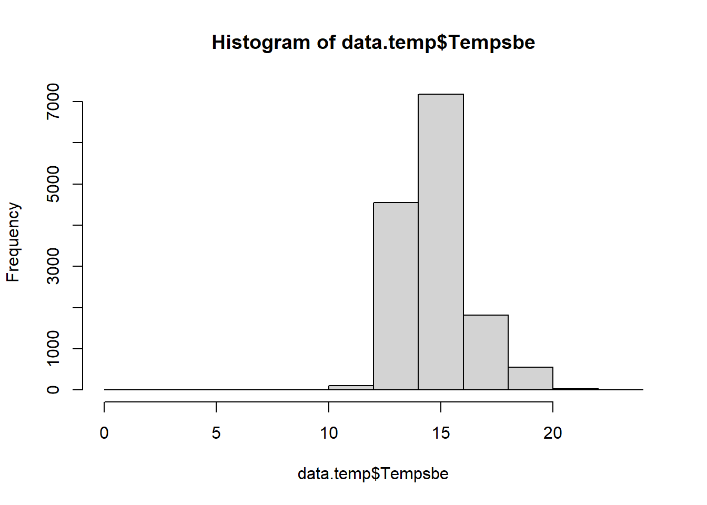
mesh <- make_mesh(data.temp, xy_cols = c("X", "Y"), cutoff = 30)
plot(mesh)We first fit a spatiotemporal model (mtemp) for temperature and then we predict temperature in the prediction grid that we already have. The results of this prediction will be the new prediction grid for the m3.
The temperature model (mtemp) follows that formula:
μs,t= exp(βt+ ωs + εs,t),
μs,t= ys,t ,
ys,t ~ Normal (μs,t σ2) , ω~ MVNormal (0,Σω) , εt ~ MVNormal (0,Σt)
where the modeled temperature (μs,t) followe a Gaussian distribution without a link function.
ys,t represents temperature at space (s) and time(t), μ is the mean density at time and space and and σ2 been the variance.
βt are the fixed effects for factor(Year), they represent the average temporal variation
ωs is the spatial random effect, drawn from a GRF with covarianvce matrix Σω using Maretn correlation function.
εs,t represents the spatiotemporal random effect, drawn from a GRF with covarianvce matrix Σε. Spatiotemporal random fields are considered independent and identically distributed each single year (spatiotemporal = “IID”) and Maretn correlation function to account for spatial autocorrelation.
fit_temp <- sdmTMB(
Tempsbe ~ 0 + Year,
data = data.temp,
mesh = mesh,
family = gaussian(link = "identity"),
spatial = "on",
spatiotemporal='IID',
time='time'
)fit_tempSpatiotemporal model fit by ML ['sdmTMB']
Formula: Tempsbe ~ 0 + Year
Mesh: mesh (isotropic covariance)
Time column: time
Data: data.temp
Family: gaussian(link = 'identity')
coef.est coef.se
Year2000 13.45 0.39
Year2001 14.86 0.37
Year2002 14.41 0.39
Year2003 18.36 0.38
Year2004 13.67 0.37
Year2005 14.38 0.41
Year2006 14.48 0.41
Year2007 14.63 0.40
Year2008 14.69 0.39
Year2009 13.37 0.38
Year2010 13.41 0.37
Year2011 15.91 0.37
Year2012 13.44 0.37
Year2013 13.48 0.38
Year2014 14.49 0.37
Year2015 14.54 0.37
Year2016 14.36 0.37
Year2017 13.81 0.37
Year2018 14.37 0.37
Year2019 14.19 0.37
Year2021 13.61 0.37
Year2022 15.35 0.38
Year2023 15.08 0.37
Year2024 15.15 0.38
Dispersion parameter: 0.42
Matérn range: 145.67
Spatial SD: 0.33
Spatiotemporal IID SD: 0.86
ML criterion at convergence: 9758.662
See ?tidy.sdmTMB to extract these values as a data frame.tidy(fit_temp, conf.int = TRUE)# A tibble: 24 × 5
term estimate std.error conf.low conf.high
<chr> <dbl> <dbl> <dbl> <dbl>
1 Year2000 13.5 0.386 12.7 14.2
2 Year2001 14.9 0.369 14.1 15.6
3 Year2002 14.4 0.387 13.7 15.2
4 Year2003 18.4 0.376 17.6 19.1
5 Year2004 13.7 0.374 12.9 14.4
6 Year2005 14.4 0.410 13.6 15.2
7 Year2006 14.5 0.412 13.7 15.3
8 Year2007 14.6 0.396 13.9 15.4
9 Year2008 14.7 0.387 13.9 15.4
10 Year2009 13.4 0.378 12.6 14.1
# ℹ 14 more rowstidy(fit_temp, effects = "ran_pars", conf.int = TRUE)# A tibble: 4 × 5
term estimate std.error conf.low conf.high
<chr> <dbl> <dbl> <dbl> <dbl>
1 range 146. 7.21 132. 161.
2 phi 0.420 0.00266 0.415 0.426
3 sigma_O 0.332 0.0453 0.254 0.434
4 sigma_E 0.858 0.0280 0.805 0.914sanity(fit_temp)✔ Non-linear minimizer suggests successful convergence✔ Hessian matrix is positive definite✔ No extreme or very small eigenvalues detected✔ No gradients with respect to fixed effects are >= 0.001✔ No fixed-effect standard errors are NA✔ No standard errors look unreasonably large✔ No sigma parameters are < 0.01✔ No sigma parameters are > 100✔ Range parameter doesn't look unreasonably largep_temp <- predict(fit_temp, newdata = grid_yrs)plot_temp <- ggplot(data=p_temp, aes(X, Y, fill = est)) +
geom_raster() + facet_wrap(vars(Year)) +
scale_fill_viridis_c(trans = "identity") +
ggtitle("Prediction (fixed effects + random effects) based on m_temp",
subtitle = expression("The estimated temperatures " (mu[st]) * ": " * mu[st] == (beta[t] + omega[s]+ epsilon[st])))
plot_temp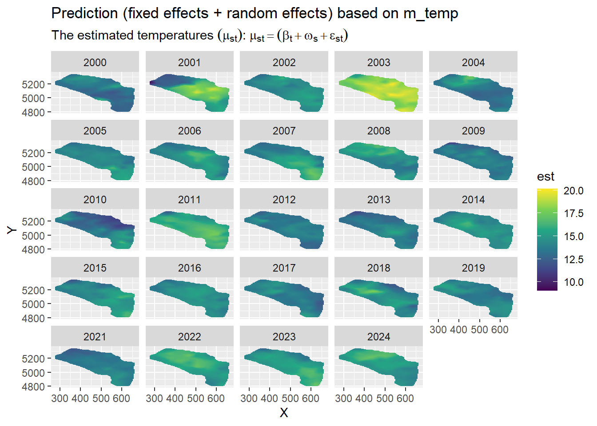
This prediction output will be the prediction grid for m3.
fit_m3 <- sdmTMB(
Sp10m3 ~ 0 + Year + s(Tempsbe),
data = data.temp,
mesh = mesh,
family = tweedie(link="log"),
spatial = "on",
spatiotemporal='IID',
time='time'
)fit_m3Spatiotemporal model fit by ML ['sdmTMB']
Formula: Sp10m3 ~ 0 + Year + s(Tempsbe)
Mesh: mesh (isotropic covariance)
Time column: time
Data: data.temp
Family: tweedie(link = 'log')
coef.est coef.se
Year2000 1.98 0.99
Year2001 -0.27 0.97
Year2002 0.54 1.00
Year2003 -1.89 1.00
Year2004 1.14 0.96
Year2005 1.11 1.04
Year2006 0.98 1.04
Year2007 0.24 1.01
Year2008 -0.71 1.00
Year2009 -0.59 0.98
Year2010 -0.50 0.98
Year2011 0.27 0.95
Year2012 0.15 0.96
Year2013 -0.23 0.98
Year2014 -0.42 0.98
Year2015 -1.24 0.98
Year2016 -0.72 0.99
Year2017 -0.30 0.97
Year2018 -0.80 0.98
Year2019 -1.73 1.00
Year2021 -2.59 1.02
Year2022 -1.47 1.01
Year2023 -1.72 1.00
Year2024 -1.38 0.99
sTempsbe 0.02 0.20
Smooth terms:
Std. Dev.
sds(Tempsbe) 1.77
Dispersion parameter: 5.72
Tweedie p: 1.58
Matérn range: 81.87
Spatial SD: 2.95
Spatiotemporal IID SD: 2.61
ML criterion at convergence: 43992.079
See ?tidy.sdmTMB to extract these values as a data frame.fix_effects<- tidy(fit_m3, conf.int = TRUE)
fix_effects# A tibble: 24 × 5
term estimate std.error conf.low conf.high
<chr> <dbl> <dbl> <dbl> <dbl>
1 Year2000 1.98 0.992 0.0393 3.93
2 Year2001 -0.267 0.969 -2.17 1.63
3 Year2002 0.542 0.997 -1.41 2.50
4 Year2003 -1.89 1.00 -3.85 0.0831
5 Year2004 1.14 0.959 -0.736 3.02
6 Year2005 1.11 1.04 -0.932 3.15
7 Year2006 0.979 1.04 -1.06 3.02
8 Year2007 0.240 1.01 -1.74 2.22
9 Year2008 -0.708 0.999 -2.67 1.25
10 Year2009 -0.594 0.981 -2.52 1.33
# ℹ 14 more rowsrandom_effects<- tidy(fit_m3, effects = "ran_pars", conf.int = TRUE)
random_effects# A tibble: 5 × 5
term estimate std.error conf.low conf.high
<chr> <dbl> <dbl> <dbl> <dbl>
1 range 81.9 5.69 71.4 93.8
2 phi 5.72 0.0671 5.59 5.85
3 sigma_O 2.95 0.310 2.40 3.62
4 sigma_E 2.61 0.0768 2.47 2.77
5 tweedie_p 1.58 0.00338 1.57 1.58Other than the effect of the spatial random (sigma_O) and the spatiotemporal random field (sigma_E) field you have:
Matérn range: the distance at witch you have no correlation - similar to the variogram range
phi (φ) & tweedie_p (p): the dispersion parameter and the power of the Tweedie distribution, respectively.
The effect of Temperature is not in the fixed_effects because we used a smoother. How can I visualize this effect??
ggplot() +
geom_point(data = fix_effects, aes(x = estimate, y = term, col = term)) +
geom_errorbar(data = fix_effects, aes(y = term, xmin = conf.low, xmax = conf.high, color = term), width = 0.2) +
geom_point(data = random_effects %>% filter(term == c("sigma_O","sigma_E")), aes(x = estimate, y = term)) +
geom_errorbar(data = random_effects %>% filter(term == c("sigma_O","sigma_E")), aes(y = term, xmin = conf.low, xmax = conf.high), width = 0.2) +
labs( title = expression("Mean and 95% confidence intervals of the fixed & random effects," ~ m[3]),
subtitle = expression(mu[s~t] ~ "=" ~ exp(X[st]* beta + beta[t]+ omega[s] +epsilon[st]))) +
theme_bw() +
theme(legend.position = "none")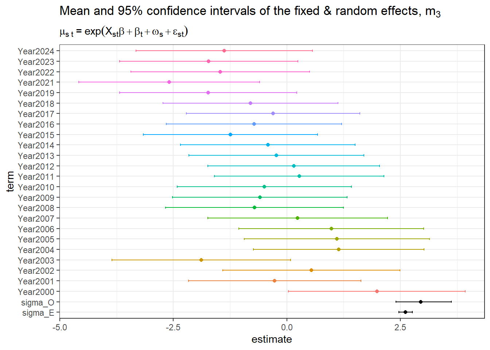
sanity(fit_m3)✔ Non-linear minimizer suggests successful convergence✔ Hessian matrix is positive definite✔ No extreme or very small eigenvalues detected✔ No gradients with respect to fixed effects are >= 0.001✔ No fixed-effect standard errors are NA✔ No standard errors look unreasonably large✔ No sigma parameters are < 0.01✔ No sigma parameters are > 100✔ Range parameter doesn't look unreasonably largep_temp = p_temp %>% rename(Tempsbe=est)
p_m3 <- predict(fit_m3, newdata = p_temp)plot_m3 <- ggplot(data=p_m3, aes(X, Y, fill = exp(est))) +
geom_raster() + facet_wrap(vars(Year)) +
scale_fill_viridis_c(trans = "log")+
ggtitle("Prediction (fixed effects + random effects) based on full m3",
subtitle = expression("The estimated density of eggs " * log(mu[st]) * ": " * mu[st] == exp(X[t,s]*beta +beta[t] + omega[s]+ epsilon[st])))
plot_m3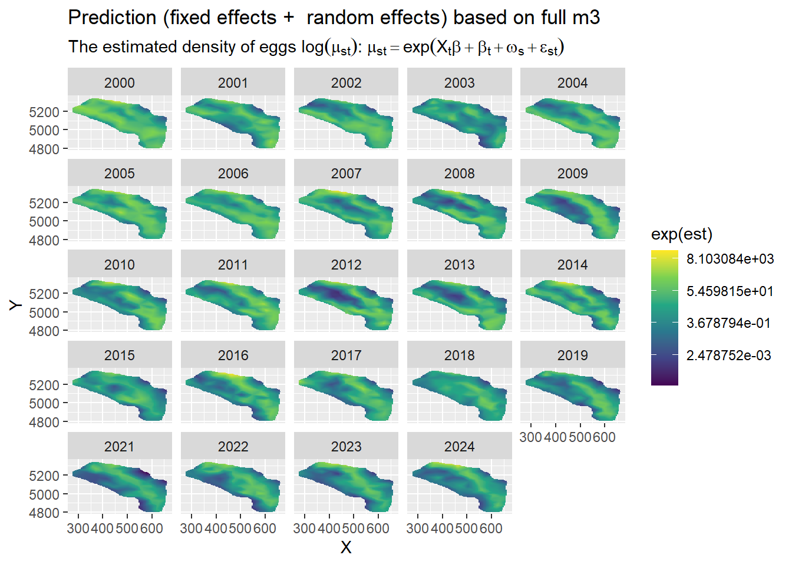
plot_m3 <- ggplot(data=p_m3, aes(X, Y, fill = exp(est_non_rf))) +
geom_raster() + facet_wrap(vars(Year)) +
scale_fill_viridis_c(trans = "log")+
ggtitle("Prediction (fixed effects only) based on full m3",
subtitle = expression("The effect of time and temperature in the estimated variable " * (X*beta+ beta[t]) * ": " * mu[st] == exp(X[t,s]*beta +beta[t] + omega[s]+ epsilon[st])))
plot_m3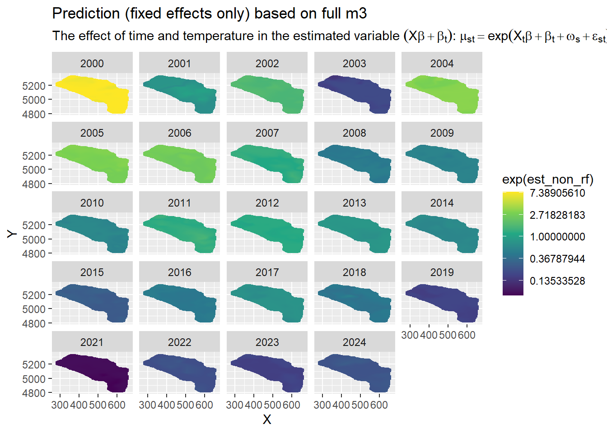
The pastern change is space - just because the effect of temperature is small and the scale is not good it is not reprisented well in the map.
plot_m3 <- ggplot(data=p_m3, aes(X, Y, fill = exp(omega_s))) +
geom_raster() +
scale_fill_viridis_c(trans = "log")+
ggtitle("Prediction (spatial random effect) based on full m3",
subtitle = expression("The effect of space in the estimated variable " * (omega[s]) * ": " * mu[st] == exp(X[t,s]*beta+beta[t] + omega[s] + epsilon[st])))
plot_m3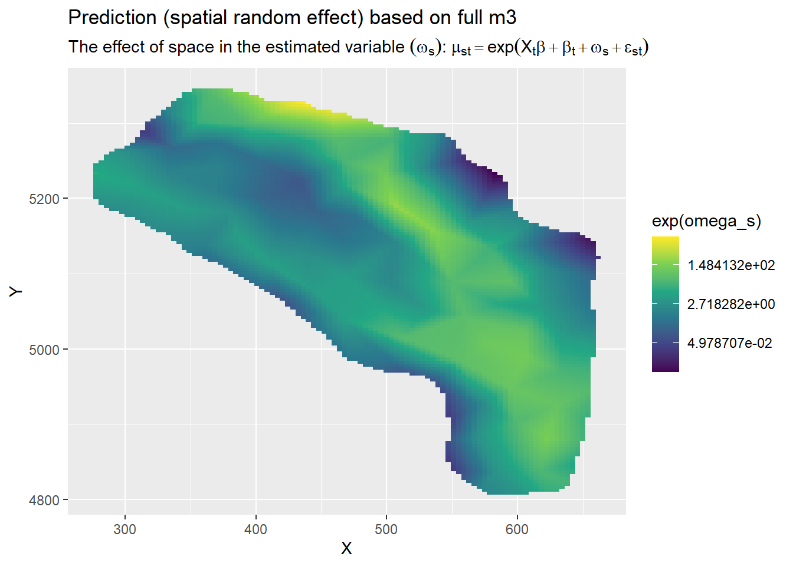
plot_m3 <- ggplot(data=p_m3, aes(X, Y, fill = exp(epsilon_st))) +
geom_raster() +
facet_wrap(vars(Year)) +
scale_fill_viridis_c(trans = "log")+
ggtitle("Prediction (spatiotemporal random effect) based on full m3",
subtitle = expression("The effect of space through time in the estimated variable " * (epsilon[st]) * ": " * mu[st] == exp(X[t,s]*beta+beta[t] +omega[s] + epsilon[st])))
plot_m3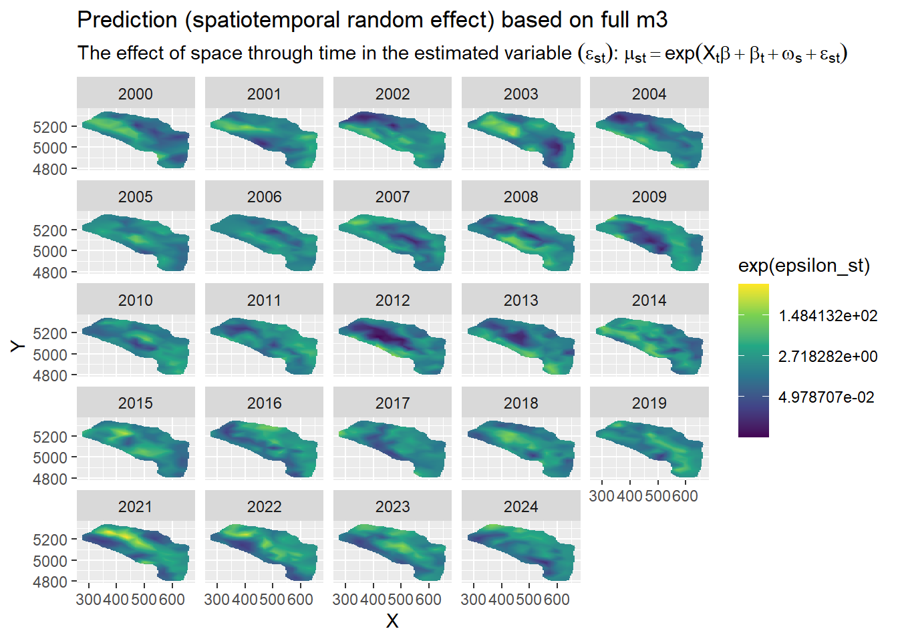
How I do not get that ???
nd <- data.frame(
Tempsbe = seq(min(data.temp$Tempsbe), max(data.temp$Tempsbe), length.out = 100
),
Year = as.factor(2024),time=24 # a chosen year
)
p <- predict(fit_m3, newdata = nd, se_fit = TRUE, re_form = NA)
ggplot(p, aes(Tempsbe, exp(est),
ymin = exp(est - 1.96 * est_se),
ymax = exp(est + 1.96 * est_se)
)) +
geom_line() +
geom_ribbon(alpha = 0.4) +
scale_x_continuous() +
coord_cartesian(expand = F) +
labs(x = "Temp (°C)", y = "Density (Nb/10m3)")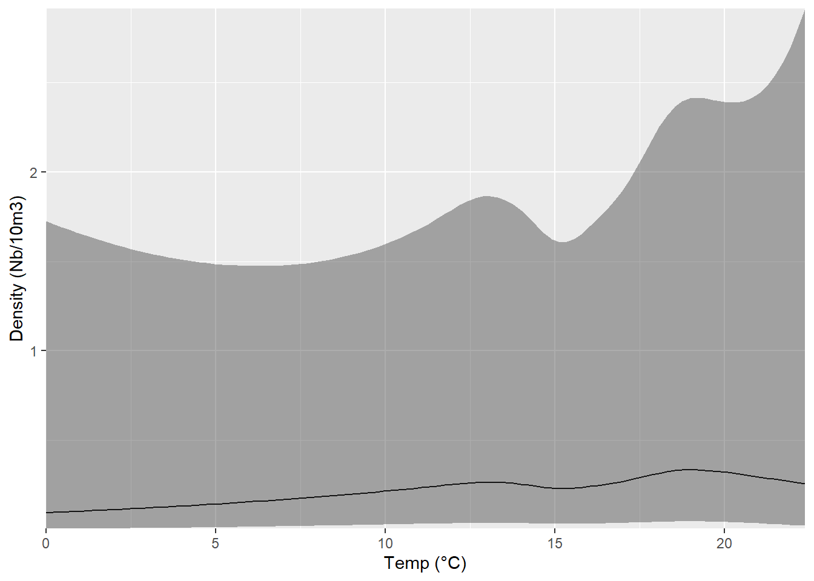
data.prof=data.eggs[data.eggs$Sonde>=0 & data.eggs$Sonde<5000 & !is.na(data.eggs$Sonde),]
hist((data.prof$Sonde))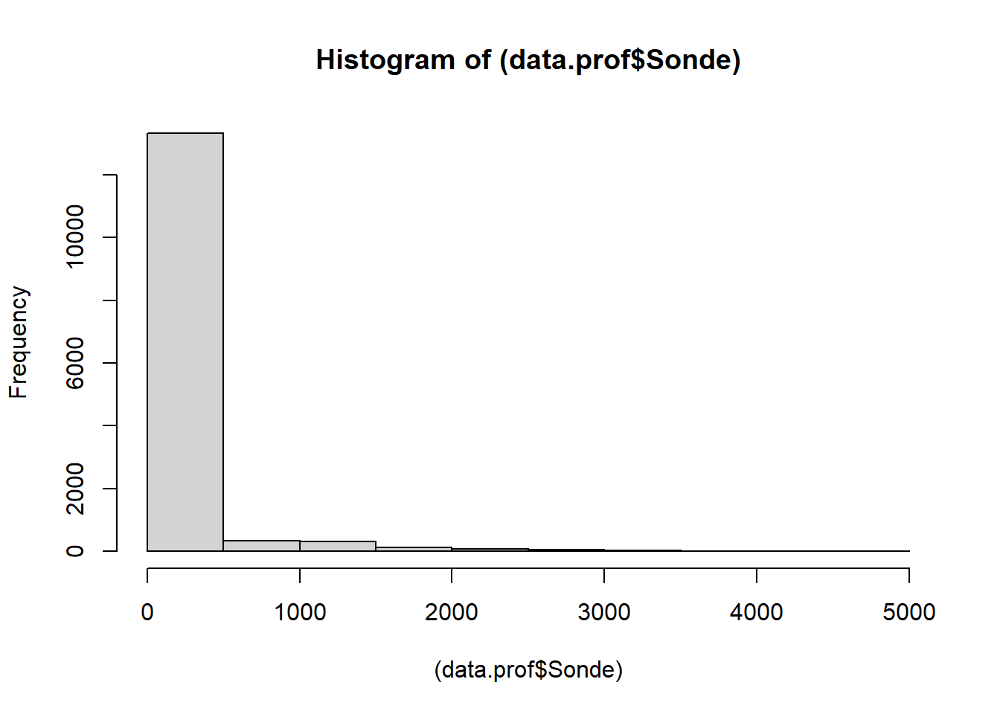
mesh <- make_mesh(data.prof, xy_cols = c("X", "Y"), cutoff = 30)
plot(mesh)fit_prof <- sdmTMB(
Sonde ~ 0 + Year,
data = data.prof,
mesh = mesh,
family = gaussian(link = "log"),
spatial = "on",
spatiotemporal='IID',
time='time'
)fit_tempSpatiotemporal model fit by ML ['sdmTMB']
Formula: Tempsbe ~ 0 + Year
Mesh: mesh (isotropic covariance)
Time column: time
Data: data.temp
Family: gaussian(link = 'identity')
coef.est coef.se
Year2000 13.45 0.39
Year2001 14.86 0.37
Year2002 14.41 0.39
Year2003 18.36 0.38
Year2004 13.67 0.37
Year2005 14.38 0.41
Year2006 14.48 0.41
Year2007 14.63 0.40
Year2008 14.69 0.39
Year2009 13.37 0.38
Year2010 13.41 0.37
Year2011 15.91 0.37
Year2012 13.44 0.37
Year2013 13.48 0.38
Year2014 14.49 0.37
Year2015 14.54 0.37
Year2016 14.36 0.37
Year2017 13.81 0.37
Year2018 14.37 0.37
Year2019 14.19 0.37
Year2021 13.61 0.37
Year2022 15.35 0.38
Year2023 15.08 0.37
Year2024 15.15 0.38
Dispersion parameter: 0.42
Matérn range: 145.67
Spatial SD: 0.33
Spatiotemporal IID SD: 0.86
ML criterion at convergence: 9758.662
See ?tidy.sdmTMB to extract these values as a data frame.tidy(fit_temp, conf.int = TRUE)# A tibble: 24 × 5
term estimate std.error conf.low conf.high
<chr> <dbl> <dbl> <dbl> <dbl>
1 Year2000 13.5 0.386 12.7 14.2
2 Year2001 14.9 0.369 14.1 15.6
3 Year2002 14.4 0.387 13.7 15.2
4 Year2003 18.4 0.376 17.6 19.1
5 Year2004 13.7 0.374 12.9 14.4
6 Year2005 14.4 0.410 13.6 15.2
7 Year2006 14.5 0.412 13.7 15.3
8 Year2007 14.6 0.396 13.9 15.4
9 Year2008 14.7 0.387 13.9 15.4
10 Year2009 13.4 0.378 12.6 14.1
# ℹ 14 more rowstidy(fit_temp, effects = "ran_pars", conf.int = TRUE)# A tibble: 4 × 5
term estimate std.error conf.low conf.high
<chr> <dbl> <dbl> <dbl> <dbl>
1 range 146. 7.21 132. 161.
2 phi 0.420 0.00266 0.415 0.426
3 sigma_O 0.332 0.0453 0.254 0.434
4 sigma_E 0.858 0.0280 0.805 0.914sanity(fit_temp)✔ Non-linear minimizer suggests successful convergence✔ Hessian matrix is positive definite✔ No extreme or very small eigenvalues detected✔ No gradients with respect to fixed effects are >= 0.001✔ No fixed-effect standard errors are NA✔ No standard errors look unreasonably large✔ No sigma parameters are < 0.01✔ No sigma parameters are > 100✔ Range parameter doesn't look unreasonably largep_prof <- predict(fit_prof, newdata = grid_yrs)plot_prof <- ggplot(data=p_prof, aes(X, Y, fill = exp(est))) +
geom_raster() + facet_wrap(vars(Year)) +
scale_fill_viridis_c(trans = "log")
plot_prof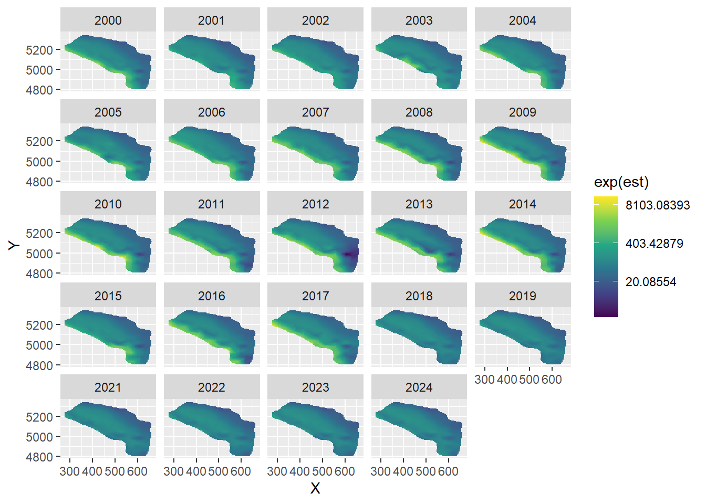